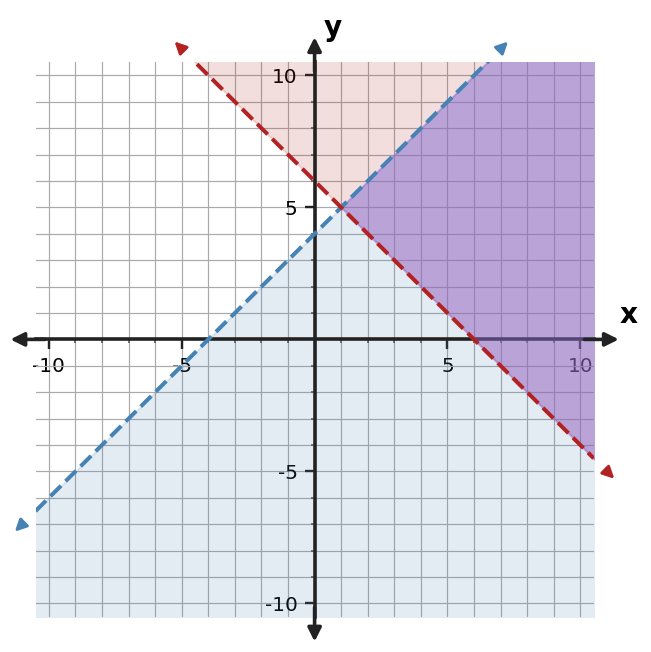
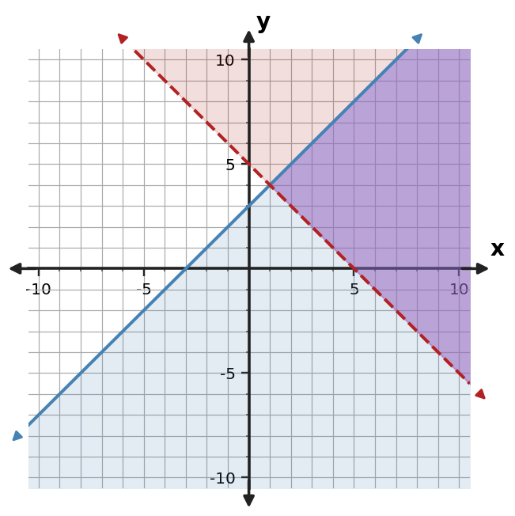
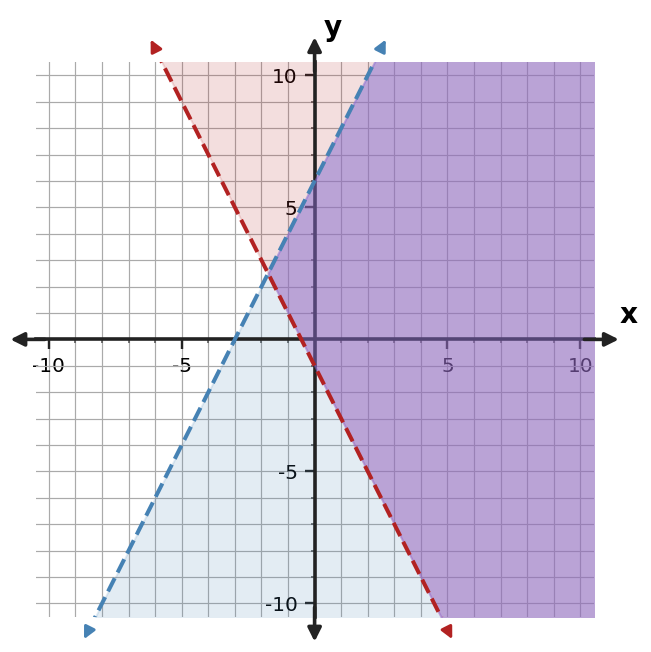
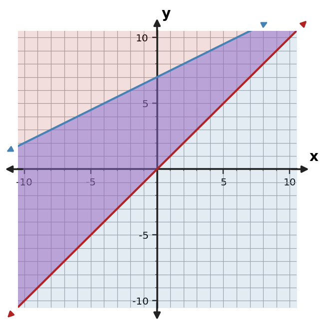
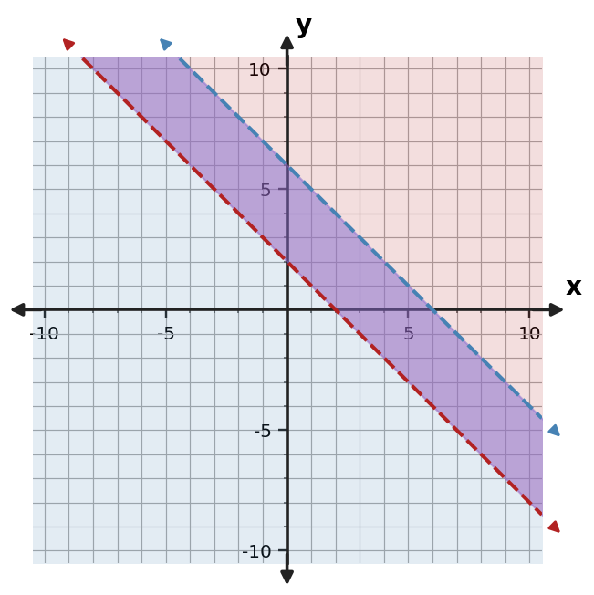
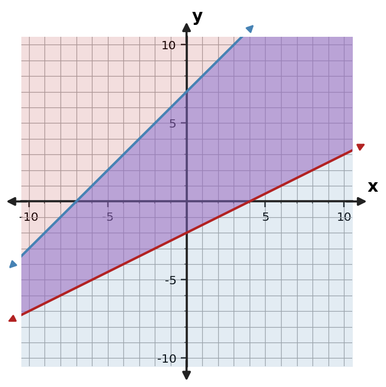

Algebra Practice 3.5
1. Use the table to identify points that satisfy both inequalities.
| Point | Constraint 1 | Constraint 2 | Feasible |
|---|---|---|---|
| (0,4) | No | No | No |
| (2,4) | Yes | Yes | Yes |
| (4,1) | Yes | Yes | Yes |
2. Use the graph to describe the feasible region of the system. Give one point that appears feasible.

3. A group has a limit of 31 total items split between large candles and small candles, and it needs at least 10 small candles. Let $x$ be the number of large candles and $y$ the number of small candles. Write a system of inequalities, including nonnegativity.
4. The point $(1,6)$ satisfies $y\ge -x+5$ but does not satisfy $y\le x+4$. Can it belong to the feasible region of the system? Explain using the meaning of overlap.
5. Use the graph to describe the feasible region of the system. Give one point that appears feasible.

6. Determine whether $(5,6)$ is feasible for $y\le x+9$ and $y\ge -x+3$. Show both checks.
7. Use the table to identify points that satisfy both $y\le 2x+4$ and $y\ge 0.5x+2$.
| Point | Constraint 1 | Constraint 2 | Feasible |
|---|---|---|---|
| (0,0) | Yes | No | No |
| (2,2) | Yes | No | No |
| (4,1) | Yes | No | No |
8. Use the graph to describe the feasible region of the system. Give one point that appears feasible.

9. A workshop can make at most 16 posters in total and must make at least 5 of type $y$. Let $x$ and $y$ be the two types. Write a system of inequalities, including nonnegativity.
10. The point $(1,10)$ satisfies $y\ge -x+5$ but does not satisfy $y\le x+8$. Can it belong to the feasible region of the system? Explain using the meaning of overlap.
11. Use the graph to describe the feasible region of the system. Give one point that appears feasible.

12. Determine whether $(2,6)$ is feasible for $y\le 2x+5$ and $y\ge 0.5x+2$. Show both checks.
13. Use the table to identify points that satisfy both $y\le -x+5$ and $y\ge x-2$.
| Point | Constraint 1 | Constraint 2 | Feasible |
|---|---|---|---|
| (0,1) | Yes | Yes | Yes |
| (2,3) | Yes | Yes | Yes |
| (4,2) | No | Yes | No |
14. Use the graph to describe the feasible region of the system. Give one point that appears feasible.

15. A workshop can make at most 20 tables in total and must make at least 3 of type $y$. Let $x$ and $y$ be the two types. Write a system of inequalities, including nonnegativity.
16. Describe the condition a point must meet to belong to the overlap of two inequality constraints.
17. Use the graph to describe the feasible region of the system. Give one point that appears feasible.

18. Determine whether $(3,2)$ is feasible for $y\le -x+6$ and $y\ge x-1$. Show both checks.
19. Use the table to identify points that satisfy both $y\le x+5$ and $y\ge -x+2$.
| Point | Constraint 1 | Constraint 2 | Feasible |
|---|---|---|---|
| (0,-1) | Yes | No | No |
| (2,1) | Yes | Yes | Yes |
| (4,0) | Yes | Yes | Yes |
20. Use the graph to describe the feasible region of the system. Give one point that appears feasible.

21. A workshop can make at most 19 boxes in total and must make at least 8 of type $y$. Let $x$ and $y$ be the two types. Write a system of inequalities, including nonnegativity.
22. Why is satisfying only one inequality insufficient for a solution of the whole system?
23. Use the graph to describe the feasible region of the system. Give one point that appears feasible.

24. Determine whether $(1,7)$ is feasible for $y\le x+4$ and $y\ge -x+1$. Show both checks.